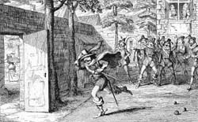

|
|
||||
|
|
Home | Corson Collection | Biography | Works | Image Collection | Recent Publications | Portraits | Correspondence | Forthcoming Events | Links | E-Texts | Contact The Fortunes of NigelFirst Edition, First Impression: The Fortunes of Nigel. By the Author of "Waverley, Kenilworth," &c. In Three Volumes. Vol. I (II-III). Edinburgh: Printed for Archibald Constable and Co. And Hurst, Robinson and Co., London, 1822. Composition | Synopsis | Reception | Links Composition
SynopsisThe plot concerns the efforts of Nigel Olifaunt, Lord Glenvarloch, to prevent the sale of his ancestral castle and estates. In order to do so, he travels to London to reclaim a large sum of money lent to King James I and VI by his father. As the royal favourite, the Duke of Buckingham, desires the land, the King is reluctant to comply with Nigel's request. Buckingham's friend, Lord Dalgarno, attempts to place Nigel in a disadvantageous light by luring him into a life of dissipation. Exaggerated reports of Nigel's follies reach the King, and he is isolated from the court. Apprised of Dalgarno's treachery, Nigel confronts and strikes him in the royal park of St. James, an offence punishable by the loss of his right hand. He solicits the King's favour but is sent to the Tower of London. His rescue is effected by a secret admirer, Margaret Ramsay, goddaughter of the King's banker, George Heriot. Margaret also wishes to restore the honour of her friend and patroness, Lady Hermione, whom Dalgarno has tricked into a false marriage. Disguised as a page she obtains an audience with King James, and persuades him of Nigel's innocence and Dalgarno's duplicity. Nigel's estates are redeemed, and he and Margaret wed. Dalgarno is compelled to make Hermione his lawful wife. Dalgarno makes off with his wife's money and heads for Scotland in an attempt to seize Nigel's land, but is ambushed and killed by robbers. The widowed Hermione makes Nigel and Margaret her heirs.  ReceptionCritical reaction to The Fortunes of Nigel was decidedly mixed. The Eclectic Review, Literary Gazette, and Edinburgh Magazine were warm in their praise, the latter judging it one of Scott's 'most brilliant and perfect creatures'. They expressed reservations, though, about the Lady Hermione subplot, felt to be a clumsy and non-essential distraction from the main strand of the tale. At the opposite extreme, the Examiner considered it a 'mere abortion' only partially redeemed by vivid descriptive passages, and the New Monthly Magazine and Literary Journal detected 'no principle of unity -- no central point of interest'. More evenhanded notices appeared in the Scotsman, which thought the novel 'a brilliant, but unsatisfactory pageant', and in the Quarterly, which found the plot obscure and improbable and many of the characters dull, but praised the portrayal of King James. Though the reviewers were divided, the phenomenal sales of Scott's novels continued unabated. Constable reported that on the day that the first batch of 7,000 copies reached London, all had been sold by 10.30. He had even seen people 'reading it in the Streets as they passed along' (letter to Scott, 31 May, 1822). Links
Last updated: 19-Dec-2011 |
|||